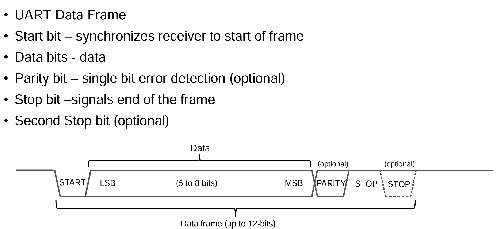

Chapter1 软件分层设计架构
分层设计架构
-
APL 应用层 (Application Layer)
项目硬件资源之上的代码，例如 scheduler任务调度器，UI交互逻辑等。
-
FML 设备模块层 (Function Module Layer)
是对一系列HDL操作的再封装，例如该模块某业务功能，是由一系列硬件驱动动作序列组成的。 假设定义一个AT24C02(EEPROM)上电数据准确性自检的业务动作（读取数据并比较差异再保存）。 需要AT24CXX_Read(),AT24CXX_Write(),等动作序列组成AT24CXX_Check()的业务动作。 将这些HDL层的操作序列封装，就是设备模块层
-
HDL/BSP 硬件驱动层 (Hardware Module Layer)
是对一系列HAL操作的再封装，例如AT24C02(EEPROM)需要一系列IIC动作序列驱动，ST7789(TFT-LCD)需要一系列SPI动作序列驱动。 AT24C02(EEPROM)实现读一个字节的操作，是由若干条IIC动作序列 IIC_Start()，IIC_Send_Byte()，IIC_Wait_Ack()，IIC_Stop() 组成了AT24CXX_ReadOneByte() 将这些动作封装起来，成为具体设备的固定基本操作，就是硬件驱动层
-
HAL 硬件抽象层（Hardware Abstract Layer）
由厂家提供，是对硬件寄存器操作的封装层。 MCU的内核资源 Systick、NVIC / 片上资源 GPIO、UART、FLASH、ADC等等
大道至简，越简单的代码，越不容易犯错，越容易纠错。逻辑清晰的软件架构可以节省开发时间，节省调试时间，以及减少程序的bug。
1 APL (Application Layer)
KeyScan 按键扫描
-
少量IO检测多个按键实现
1.使用矩阵按键，例如行4列4，8个IO组成的矩阵可以检测4*4=16个按键，但少量按键这个方法不合适
2.使用ADC检测多个按键，通过电阻分压，使得不同按键电压值不同。
-
软件消抖
1.定时器延时检测状态。不消耗CPU资源，裸机可用
2.延时死等检测状态。消耗CPU资源，裸机不可用，RTOS下可用
keyscan.c
结构体面向对象+有限状态机 实现多个按键扫描
#define KEY_NUM 2 // 按键实例总数量
/////////////////// 按键引脚读取函数 ///////////////////
uint8_t key_up_readpin(void){
return GPIO_ReadInputDataBit(GPIOA, GPIO_Pin_7);
}
uint8_t key_down_readpin(void){
return GPIO_ReadInputDataBit(GPIOA, GPIO_Pin_4);
}
/////////////////// 按键状态机实例 ///////////////////
KeyFsm key_up = {
.fsm_state = KEY_STATE_IDLE,
.last_fsm_state = KEY_STATE_IDLE,
.event = KEY_EVENT_NONE,
.last_state = KEY_RELEASED,
.press_time = 0,
.detect_time = 0,
.debounce_time = 20, // 默认消抖时间20ms
.long_press_time = 1000, // 默认长按判定时间1000ms
.read_pin = &key_up_readpin
};
KeyFsm key_down = {
.fsm_state = KEY_STATE_IDLE,
.last_fsm_state = KEY_STATE_IDLE,
.event = KEY_EVENT_NONE,
.last_state = KEY_RELEASED,
.press_time = 0,
.detect_time = 0,
.debounce_time = 20, // 默认消抖时间20ms
.long_press_time = 1000, // 默认长按判定时间1000ms
.read_pin = &key_down_readpin
};
/////////////////// 按键实例集合 ///////////////////
KeyFsm* key_array[KEY_NUM] = {&key_up, &key_down};
/**
* @brief 初始化按键扫描
*
* @param key_fsm 初始化目标（按键状态机实例），结构体指针形式
* @param read_pin_func 赋给目标的读取引脚状态函数，函数指针形式
*/
void key_scan_init(KeyFsm* key_fsm, uint8_t (*read_pin_func)(void)) {
if (read_pin_func) {
key_fsm->read_pin = read_pin_func;
}
key_fsm->fsm_state = KEY_STATE_IDLE;
key_fsm->last_fsm_state = KEY_STATE_IDLE;
key_fsm->event = KEY_EVENT_NONE;
key_fsm->last_state = KEY_RELEASED;
}
/**
* @brief 获取当前按键事件
*
* @param key_fsm 被读取按键事件的目标（按键状态机实例），结构体指针形式
* @return KeyEvent 返回的按键事件
*/
KeyEvent key_scan_get_event(KeyFsm* key_fsm) {
KeyEvent event = key_fsm->event;
key_fsm->event = KEY_EVENT_NONE; // 读取后清除事件
return event;
}
/**
* @brief 按键状态机处理函数
*
* @param key_fsm 被处理的目标（按键状态机实例），结构体指针形式
* @param current_state 传入的目标（按键状态机实例）当前按键状态
*/
static void key_fsm_process(KeyFsm* key_fsm, uint8_t current_state) {
uint32_t current_time = timer_get_ms(); // 获取当前时间(ms)
switch (key_fsm->fsm_state) {
case KEY_STATE_IDLE:
// 检测到按键按下(假设0为按下状态)
if (current_state == KEY_PRESSED && key_fsm->last_state == KEY_RELEASED) {
key_fsm->fsm_state = KEY_STATE_PRESS_DETECT;
key_fsm->detect_time = current_time;
}
break;
case KEY_STATE_PRESS_DETECT:
// 消抖检测: 保持按下状态超过消抖时间
if (current_state == KEY_PRESSED) {
if (current_time - key_fsm->detect_time >= key_fsm->debounce_time) {
key_fsm->fsm_state = KEY_STATE_PRESSED;
key_fsm->press_time = current_time;
}
}
else {
// 未通过消抖，回到空闲状态
key_fsm->fsm_state = KEY_STATE_IDLE;
}
break;
case KEY_STATE_PRESSED:
// 按键释放
if (current_state == KEY_RELEASED) {
key_fsm->last_fsm_state = KEY_STATE_PRESSED;
key_fsm->fsm_state = KEY_STATE_RELEASE_DETECT;
key_fsm->detect_time = current_time;
}
// 检测长按
else if (current_time - key_fsm->press_time >= key_fsm->long_press_time) {
key_fsm->fsm_state = KEY_STATE_LONG_PRESS;
key_fsm->event = KEY_EVENT_LONG_PRESS;
}
break;
case KEY_STATE_LONG_PRESS:
// 长按状态下释放按键
if (current_state == KEY_RELEASED) {
key_fsm->last_fsm_state =KEY_STATE_LONG_PRESS;
key_fsm->fsm_state = KEY_STATE_RELEASE_DETECT;
key_fsm->detect_time = current_time;
}
break;
case KEY_STATE_RELEASE_DETECT:
// 消抖检测: 保持释放状态超过消抖时间
if (current_state == KEY_RELEASED) {
if (current_time - key_fsm->detect_time >= key_fsm->debounce_time) {
// 根据之前的状态判断是短按还是长按后释放
if (key_fsm->last_fsm_state == KEY_STATE_PRESSED) {
key_fsm->event = KEY_EVENT_SHORT_PRESS;
}
key_fsm->fsm_state = KEY_STATE_IDLE;
key_fsm->last_fsm_state = KEY_STATE_IDLE;
}
}
else {
// 未通过消抖，回到按下状态
key_fsm->fsm_state = (key_fsm->fsm_state == KEY_STATE_LONG_PRESS) ?
KEY_STATE_LONG_PRESS : KEY_STATE_PRESSED;
}
break;
default:
key_fsm->fsm_state = KEY_STATE_IDLE;
break;
}
key_fsm->last_state = (KeyState)current_state;
}
/**
* @brief 按键扫描函数，应定期调用(建议10ms一次)
*
*/
void key_scan(void) {
uint8_t i = 0;
uint8_t current_state;
// 遍历所有按键实例集合
for (i = 0; i < KEY_NUM; i++)
{
if (key_array[i]->read_pin == NULL) {
return;
}
// 读取当前按键状态
current_state = key_array[i]->read_pin();
// 处理状态机
key_fsm_process(key_array[i], current_state);
}
}
keyscan.h
#ifndef __KEYSCAN_H__
#define __KEYSCAN_H__
// 按键按下状态枚举
typedef enum {
KEY_PRESSED, // 按下 0
KEY_RELEASED // 释放 1
} KeyState;
// 按键状态枚举
typedef enum {
KEY_STATE_IDLE, // 空闲状态
KEY_STATE_PRESS_DETECT, // 检测到按下，消抖中
KEY_STATE_PRESSED, // 已按下状态
KEY_STATE_LONG_PRESS, // 长按状态
KEY_STATE_RELEASE_DETECT // 检测到释放，消抖中
} KeyFsmState;
// 按键事件枚举
typedef enum {
KEY_EVENT_NONE, // 无事件
KEY_EVENT_SHORT_PRESS, // 短按事件
KEY_EVENT_LONG_PRESS // 长按事件
} KeyEvent;
// 按键状态机结构体
typedef struct {
KeyFsmState fsm_state; // 状态机当前状态
KeyFsmState last_fsm_state; // 上一次状态机状态，用于判定按键事件
KeyEvent event; // 当前事件
KeyState last_state;// 上一次读取的按键状态
uint32_t press_time; // 按下时间戳
uint32_t detect_time; // 检测开始时间戳
uint16_t debounce_time; // 消抖时间(ms)
uint16_t long_press_time;// 长按判定时间(ms)
uint8_t (*read_pin)(void);// 读取按键引脚状态的函数指针
} KeyFsm;
extern KeyFsm key_up;
extern KeyFsm key_down;
// 初始化按键扫描
void key_scan_init(KeyFsm* key_fsm, uint8_t (*read_pin_func)(void));
// 获取当前按键事件
KeyEvent key_scan_get_event(KeyFsm* key_fsm);
// 按键扫描函数，应定期调用
void key_scan(void);
#endif
Menu 多级菜单
使用结构体定义菜单类，并且使用结构体指针跳转菜单层级
menu.c
#define ARR_LEN(ARR) (sizeof(ARR)/sizeof((ARR)[0]))
typedef struct{
//当前菜单索引
uint8_t menu_idx;
//菜单名称
uint8_t menu_name[20];
//菜单函数指针
void (*func)(void);
}menu;
//首页菜单
menu home_page[] =
{
{//短信菜单
.menu_idx = 0,
.menu_name = "message",
.func = &message_func
},
{//电话菜单
.menu_idx = 1,
.menu_name = "call",
.func = &call_func
},
{//设置菜单
.menu_idx = 2,
.menu_name = "setting",
.func = &setting_func
}
};
//设置菜单——子菜单
menu setting_page[] =
{
{//时间设置
.menu_idx = 0,
.menu_name = "time_setting",
.func = &time_setting_func
},
{//音量设置
.menu_idx = 1,
.menu_name = "volume_setting",
.func = &volume_setting_func
},
{//亮度设置
.menu_idx = 2,
.menu_name = "brightness_setting",
.func = &brightness_setting_func
}
};
//菜单指针
menu *menu_ptr = NULL;
menu_ptr = &home_page[0];//初始化为首页菜单
void setting_func(void)
{
menu_ptr = &setting_page[0];//跳转到设置菜单
show_menu(menu_ptr, ARR_LEN(setting_page));
}
Scheduler 时间轮转调度器
scheduler.c
Queue 循环队列
队列在计算机系统中的应用非常广泛，以下仅从两个方面来阐述
-
解决主机与外部设备速度不匹配的问题
以主机和打印机之间的速度不匹配的问题为例做简要说明。主机输出数据给打印机打印，输出的数据比打印机的数据要快很多 ，因为速度不匹配，若直接把输出的数据送给打印机，显然是不行的。解决的方法是设置一个打印数据缓冲区，主要把打印输出的数据 依次写入这个缓冲区，写满后就暂停输出，转去做其他事情。打印机就从缓冲区中按照先进先出的原则依次取出数据并且打印，打印完成当前数据再向主机请求数据。这样既保证了打印数据的正确，又使主机提高了效率————王道数据结构
-
例：需要MCU在某时刻产生多条带有当前状态的信息，但UART发送数据受波特率限制，无法短时间内发送完毕，若不缓存，时变原因状态改变。那么先将当前产生的数据入队，串口发送完一包数据后，查看循环队列是否空，非空则数据出队，并且由UART发送。避免丢失当前产生的数据包，并且保持数据包时间关系的一致
-
例：UART接受到了很多数据包，处理数据包需要耗时，但如果不缓存数据包，那么时间推移导致数据覆盖，丢包。此时可以开设一个队列，对每一个接受完成的数据包进行入队，数据入队后进行解析并且出队，避免错失接受的数据包，并且保持数据包时间关系的一致
-
-
解决由多用户引起的资源竞争问题
CPU（即中央处理器，它包括运算器和控制器）资源的竞争就是一个典型例子。在一个带有多终端的计算机系统上，有多个用户需要CPU各自运行自己的程序，他们分别通过各自的终端向操作系统提出占用CPU请求。操作系统通常按照每个请求的时间先后顺序，把他们排成队列，每次CPU分配给队首请求的用户使用。当前的程序运行结束或用完规定的时间间隔后，令其出队，再把CPU分配给队首请求的用户使用。满足每个用户的请求。
queue.c
/**
* @brief 循环队列入队操作
* @param Q 循环队列首结点地址
* @param x 入队元素
*/
bool EnQueue(SqQueue &Q,ElemType x){
if((Q.rear+1)%MAXSIZE==Q.front)
return false;
Q.data[Q.rear]=x;
Q.rear=(Q.rear+1)%MAXSIZE;
return true;
}
/**
* @brief 循环队列出队操作
* @param Q 循环队列首结点地址
* @param x 出队元素迁移变量
*/
bool DeQueue(SqQueue &Q,ElemType &x){
if(Q.rear==Q.front)
return false;
x=Q.data[Q.front];
Q.front=(Q.front+1)%MAXSIZE;
return true;
}
InAppProgram 应用升级
Note
IAP (In Application Program) / OTA (Over The Air)
Bootloader（引导程序）+FlashArea1（APP1应用程序段）+FlashArea2（APP2应用程序备份段）
为了防止IAP升级失败，应该有刷新回滚功能，即备份段（若MCU的FLASH空间足够）
主要在于Bootloader的程序编写，次要在于APP程序中断向量表偏移，以及Boot与APP间的跳转
-
Bootloader：用通信来接收APP的bin文件，可以写入片内Flash，或SRAM直接跳转。接收完成后应当校验程序是否完整，才能进行跳转
//STM32中的简易的BOOT跳转APP //确定app程序区首地址 #define FLASH_APP1_ADDR 0x08002000 typedef void (*iapfun)(void);//定义一个函数类型的参数. iapfun jump2app; //设置堆栈地址 __asm void MSR_MSP(u32 addr) { MSR MSP, r0 //set Main Stack value BX r14 } //跳转到应用程序段 //appxaddr:用户代码起始地址. void iap_load_app(u32 appxaddr) { if(((*(vu32*)appxaddr)&0x2FFE0000)==0x20000000) //检查栈顶地址是否合法. { jump2app=(iapfun)*(vu32*)(appxaddr+4); //用户代码区第二个字为程序开始地址(复位地址) MSR_MSP(*(vu32*)appxaddr); //初始化APP堆栈指针(用户代码区的第一个字用于存放栈顶地址) jump2app(); //跳转到APP. } } int main(void) { SystemInit();//系统时钟初始化 if(((*(vu32*)(FLASH_APP1_ADDR+4))&0xFF000000)==0x08000000)//判断是否为0X08XXXXXX. { iap_load_app(FLASH_APP1_ADDR);//执行FLASH APP代码 } } -
APP：由于Boot程序已经占用了Flash的一些空间，所以需要根据占用来偏移APP程序的所在空间。另外需要重新定位中断向量表，使得APP程序里中断可以正常运行
#define APP_START_ADDRESS (uint32_t)(0x08002000) SCB->VTOR = APP_START_ADDRESS; /* Vector Table Relocation in Internal FLASH. */需要注意的是 Cortex-M0 的中断向量表重定位，因为M0架构没有重定位寄存器，使用无法使用
SCB->VTOR来重新定位中断向量表。 常规的做法是，RAM中腾处一些固定空间，专门存放复制的中断向量表。然后重新定向到RAM地址（通常0x20000000）
2 HAL（Hardware Abstract Layer）

SysTick 滴答定时器
// 1 滴答定时器配置 SysTick_Config
// 以72MHZ时钟频率举例，1秒计72M次。
// 72M / 1000 = 72000，也就是计数72000次产生一次中断
// 时间上就是1ms，1秒中断1000次
SysTick_Config(SystemCoreClock / 1000);//SystemCoreClock 为MCU主频 .
// 2 滴答中断处理函数 SysTick_Handler
void SysTick_Handler()//滴答中断处理函数
RCC 复位和时钟控制
RCC（Reset and Clock Control）
RCC是STM32微控制器中的一个重要模块.
用于管理系统的时钟和复位功能。RCC 模块负责为各个外设提供时钟信号，并控制这些时钟信号的通断
GPIO 通用输入输出
General Purpose Input Output
1） GPIO_Mode_AIN 模拟输入；ADC
2） GPIO_Mode_IN_FLOATING 浮空输入；按键
3） GPIO_Mode_IPD 下拉输入；默认低电平，检测上升沿
4） GPIO_Mode_IPU 上拉输入；默认高电平，检测下升沿
5） GPIO_Mode_Out_OD 开漏输出；
6） GPIO_Mode_Out_PP 推挽输出；输出高低电平，是最常用的模式。
7） GPIO_Mode_AF_OD 复用开漏输出；IIC
8） GPIO_Mode_AF_PP 复用推挽输出。UART, SPI
GPIO八种工作模式讲解，图文结合，一文带你轻松搞懂 - 知乎
EXIT 外部中断 / INT中断
TIM 定时器
ADC 模拟/数字转换器
DMA 直接内存访问
IWDG 独立看门狗
FLASH 片内存储
Flash latency（闪存延迟）指的是从 CPU 或控制器发出读取 / 写入请求，到 Flash 存储器完成操作并返回数据 / 确认的时间间隔，本质是衡量 Flash 响应速度的核心指标。
它的产生核心源于 Flash 的物理特性：Flash 存储单元的擦除、编程操作需通过电荷迁移实现，无法像 SRAM 那样即时响应，因此存在固有延迟。通常分为两类：
- 读取延迟（Read Latency）：最受关注的类型，即 CPU 请求读取某地址数据后，等待数据返回的时间，直接影响程序执行效率（尤其 MCU 从 Flash 运行代码时）。
- 写入 / 擦除延迟（Program/Erase Latency）：执行数据写入或区块擦除操作的耗时，通常远长于读取延迟（例如擦除一个 Flash 扇区可能需要毫秒级，而读取仅需几十纳秒）。
FLASH的速度是有限的，有时并不能与核心频率一样，按手册要求，当主频为24MHz或以下时，可以将LATENCY设置为0，48MHz时设置为 1，主频72MHz 需要插入2个等待，将速度降到72/3=24Mhz。否则有可能取指不稳定。意思就是不管HCLK有多高，取指令的速度最高为24Mhz。如果程序中单周期指令占绝大多数，简单核心中没有cache，即使使用流水线，实际指令运行速度也就是24M。
UART 通信协议
Universal Asynchronous Receiver / Transmitter 通用异步收发器
这可能是MCU嵌入式领域最重要的通信方式了。在开发调试中，最常见最简便的通信方式。
通信速率：常见 115200 , 19200 , 9600 bps
全双工：双数据线，RX接收，TX发送，故为全双工（收发同时进行）
异步：无同步时钟线CLK，故为异步信号，数据传输不稳定、不可靠。
-
UART通信协议时序解析
起始位：标志数据帧开始，接收端通过检测下降沿触发同步。
数据位：常用8位，最低位在前LSB，最高位在后MSB。
奇偶校验位：可选项，一般不加
校验类型 规则 特点 无校验 不添加校验位 节省1bit时间，无检错能力 奇校验 使得数据位+校验位中1的总数为奇数 检测单比特错误 偶校验 使得数据位+校验位中1的总数为偶数 检测单比特错误 Mark 固定为1 作为第9位数据使用 Space 固定为0 作为第9位数据使用 停止位：高电平，标志帧结束，并为下一帧提供缓冲时间。
常规包：1位起始位 + 8位数据位 + 1位停止位。故传输1byte = 8bit data需要10bit，在9600波特率下，10bit大概花费1ms的传输时间

硬件UART配置——四步两函数
四步 1 配置IO，TX（AF_PP）推免输出，RX（IPU）上拉输入 2 配置NVIC串口中断管理 3 配置UART参数 4 配置DMA
两函数 1 中断处理函数，UART_IRQHandler() 2 串口发送函数，可以重定向fputc(),使用 printf()
UART通信断包方式
1 根据数据帧的帧头帧尾进行断包（软件实现）
定义数据包的帧头，帧尾，以及数据长度，校验码 ASCII码数据包：可以使用0x0D 0x0A（'\r\n'）断包，不会产生重复 HEX码数据包：无法使用0x0D 0x0A断包，因为可能会有相同的hex数据
2 根据数据字节间，接收间隔计时断包（软件实现）
使用时间断包，不用像帧头帧尾断包一样，需要考虑包含帧头尾数据的情况 UART传输都是使用标准波特率，因此UART传输一帧数据时，字与字之间的时间间隔是一个固定值 可以根据UART的波特率去计算串口每个字符的间隔时间 例如在数据接收的过程中判断当字符间隔大于3.5个（modbus协议常用），则认为当前数据帧传输完毕
3 配置串口帧空闲中断（硬件实现）
串口IDLE中断，串口接收完完整的一帧数据自身产生的中断，配置使能该中断后， 串口会判断总线上一个字节的时间间隔内，有没有再次接收到数据， 如果没有则当前一帧数据接收完成，产生IDLE中断。
参考：串口接收完整一帧数据包的3种方法_串口接收一帧数据及解析
uart.c
uart_par_str uart_par[UART_NUM];
void UART1_GPIO_Init(void)
{
GPIO_InitTypeDef GPIO_InitStruct;
RCC_AHBPeriphClockCmd(RCC_AHBENR_GPIOA, ENABLE);
GPIO_PinAFConfig(GPIOA, GPIO_PinSource3, GPIO_AF_1);
GPIO_PinAFConfig(GPIOA, GPIO_PinSource12, GPIO_AF_1);
//UART1_TX GPIOA.12
GPIO_StructInit(&GPIO_InitStruct);
GPIO_InitStruct.GPIO_Pin = GPIO_Pin_12;
GPIO_InitStruct.GPIO_Speed = GPIO_Speed_50MHz;
GPIO_InitStruct.GPIO_Mode = GPIO_Mode_AF_PP;
GPIO_Init(GPIOA, &GPIO_InitStruct);
//UART1_RX GPIOA.3
GPIO_InitStruct.GPIO_Pin = GPIO_Pin_3;
GPIO_InitStruct.GPIO_Mode = GPIO_Mode_IPU;
GPIO_Init(GPIOA, &GPIO_InitStruct);
}
void UART1_Config(u32 baudrate)
{
NVIC_InitTypeDef NVIC_InitStruct;
UART_InitTypeDef UART_InitStruct;
UART1_GPIO_Init();
//enable UART1,GPIOA clock
RCC_APB1PeriphClockCmd(RCC_APB1ENR_UART1, ENABLE);
//baud rate
UART_StructInit(&UART_InitStruct);
UART_InitStruct.BaudRate = baudrate;
//The word length is in 8-bit data format.
UART_InitStruct.WordLength = UART_WordLength_8b;
UART_InitStruct.StopBits = UART_StopBits_1;
//No even check bit.
UART_InitStruct.Parity = UART_Parity_No;
//No hardware data flow control.
UART_InitStruct.HWFlowControl = UART_HWFlowControl_None;
UART_InitStruct.Mode = UART_Mode_Rx | UART_Mode_Tx;
UART_Init(UART1, &UART_InitStruct);
//clear itflg
UART_ClearITPendingBit(UART1,(UART_OVER_ERR|UART_IER_RX));
//uart ITConfig
UART_ITConfig(UART1, (UART_OVER_ERR|UART_IER_RX), ENABLE);
//NVIC config
NVIC_InitStruct.NVIC_IRQChannel = UART1_IRQn;
NVIC_InitStruct.NVIC_IRQChannelPriority = 0x01;
NVIC_InitStruct.NVIC_IRQChannelCmd = ENABLE;
NVIC_Init(&NVIC_InitStruct);
//uart enable
UART_Cmd(UART1, ENABLE);
}
/**
* @brief 开启串口发送
* @param uart_idx 串口序列号
*/
void UART_StartTX(u8 uart_idx)
{
switch(uart_idx)
{
case UART_IDX_1:
UART_ITConfig(UART1, UART_IER_TX, ENABLE);
break;
case UART_IDX_2:
UART_ITConfig(UART2, UART_IER_TX, ENABLE);
break;
....
default:
break;
}
}
/**
* @brief 停止串口发送
* @param uart_idx 串口序列号
*/
void UART_StopTX(u8 uart_idx)
{
switch(uart_idx)
{
case UART_IDX_1:
UART_ITConfig(UART1, UART_IER_TX, DISABLE);
break;
case UART_IDX_2:
UART_ITConfig(UART2, UART_IER_TX, DISABLE);
break;
....
default:
break;
}
}
/**
* @brief 串口发送1个Byte
* @param uart_idx 串口序列号
*/
void UART_SendByte(u8 data, u8 uart_idx)
{
switch(uart_idx)
{
case UART_IDX_1:
UART1->TDR = data;
break;
case UART_IDX_2:
UART2->TDR = data;
break;
....
default:
break;
}
}
/**
* @brief 串口接收监测，请1ms执行一次
*/
void uart_timeout_1ms(void)
{
u8 i = 0;
for (; i < UART_NUM; i++)
{
if(READ_BIT(uart_par[i].uart_flag, FLAG_UART_RECVING))
{
uart_par[i].recv_timeout++;
//5ms没有再收到数据，表示超时
if (uart_par[i].recv_timeout > 5)
{
lostpack_count++;
CLEAR_BIT(uart_par[i].uart_flag, FLAG_UART_RECVING);
}
}
}
}
/**
* @brief 串口发数据缓存
* @param length 数据缓存长度
* @param uart_idx 串口序列号
*/
void uart_send_buf(u8 length, u8 uart_idx)
{
SET_BIT(uart_par[uart_idx].uart_flag, FLAG_UART_SENDING);
uart_par[uart_idx].send_index = 1;
uart_par[uart_idx].send_length = length;
UART_SendByte(uart_par[uart_idx].send_buf[0], uart_idx);
UART_StartTX(uart_idx);
//uart_par[uart_idx].send_index = 0;
//uart_par[uart_idx].send_length = length;
//UART_StartTX(uart_idx);
}
/**
* @brief 串口发送事件，在串口发送中断中调用
* @param uart_idx 串口序列号
*/
void uart_send_event(u8 uart_idx)
{
if (uart_par[uart_idx].send_index < uart_par[uart_idx].send_length)
{
UART_SendByte(uart_par[uart_idx].send_buf[uart_par[uart_idx].send_index], uart_idx);
uart_par[uart_idx].send_index++;
}
else
{
CLEAR_BIT(uart_par[uart_idx].uart_flag, FLAG_UART_SENDING);
UART_StopTX(uart_idx);
}
}
/**
* @brief 串口接收事件，在串口中断中调用
* @param RX_Data 收到的Byte
* @param uart_idx 串口序列号
*/
void uart_recv_event(u8 RX_Data, u8 uart_idx)
{
switch(uart_idx)
{
case UART_IDX_1:
// IDLE空闲状态，不论如何，进入接收状态
if (0 == READ_BIT(uart_par[uart_idx].uart_flag, FLAG_UART_RECVING))
{
uart_par[uart_idx].recv_index = 0;
uart_par[uart_idx].recv_buf[uart_par[uart_idx].recv_index++] = RX_Data;
SET_BIT(uart_par[uart_idx].uart_flag, FLAG_UART_RECVING);
}
//进入了接收状态，检查帧尾 0X0D 0X0A
else
{
// 接收到0X0A，并且前一个字节是0X0D，则分包，接收完成
if((0x0A == RX_Data) && (0x0D == uart_par[uart_idx].recv_buf[uart_par[uart_idx].recv_index - 1]))
{
//判断数据长度，过滤起始0X0D 0X0A
if(uart_par[uart_idx].recv_index >= 2)
SET_BIT(uart_par[uart_idx].uart_flag, FLAG_FRAME_OK);
else
CLEAR_BIT(uart_par[uart_idx].uart_flag, FLAG_UART_RECVING);
}
else
{
// 不是帧尾，接收数据
uart_par[uart_idx].recv_buf[uart_par[uart_idx].recv_index++] = RX_Data;
//接收报文超过缓冲区长度，重新接收
if (uart_par[uart_idx].recv_index >= RECV_BUF_MAX_SIZE)
{
CLEAR_BIT(uart_par[uart_idx].uart_flag, FLAG_UART_RECVING);
}
}
}
break;
case UART_IDX_2:
break;
default:
break;
}
//清除超时计数
uart_par[uart].recv_timeout = 0;
}
/**
* @brief UART1中断处理函数
*/
void UART1_IRQHandler(void)
{
u8 RX_Data;
//send data
if (UART_GetITStatus(UART1,UART_IT_TXIEN) != RESET)
{
if (UART1->IER & UART_IER_TX)
{
UART_ClearITPendingBit(UART1, UART_IT_TXIEN);
uart_send_event(UART_IDX_1);
}
}
//receive data
if (UART_GetITStatus(UART1,UART_IT_RXIEN) != RESET)
{
RX_Data = UART_ReceiveData(UART1);
uart_recv_event(RX_Data, UART_IDX_1);
UART_ClearITPendingBit(UART1, UART_IT_RXIEN);
}
// else if (UART_GetITStatus(UART1,UART_OVER_ERR) != RESET)
// {
// RX_Data = UART_ReceiveData(UART1);
// uart_recv_event(RX_Data, UART_IDX_1);
// UART_ClearITPendingBit(UART1, UART_OVER_ERR);
// }
}
uart.h
#ifndef __UART_H__
#define __UART_H__
#define UART_NUM 2 //串口总数量
#define UART_IDX_1 0 //对应串口1
#define UART_IDX_2 1 //对应串口2
#define FLAG_UART_SENDING (1 << 0) //串口发送标识
#define FLAG_UART_RECVING (1 << 1) //串口接收标识
#define FLAG_FRAME_OK (1 << 7) //串口帧完成标识
#define SEND_BUF_MAX_SIZE 50 //接收缓冲区最大长度
#define RECV_BUF_MAX_SIZE 50 //接收缓冲区最大长度
typedef struct
{
u8 uart_flag; //串口状态标志
u8 recv_timeout; //接收超时计数
u8 recv_index; //接收索引
u8 send_index; //发送索引
u8 send_length; //发送缓存长度
u8 send_buf[SEND_BUF_MAX_SIZE];
u8 recv_buf[RECV_BUF_MAX_SIZE];
}uart_par_str;
void uart_timeout_1ms(void);
void uart_send_buf(u8 length, u8 uart);
void uart_send_event(u8 uart);
void uart_recv_event(u8 RX_Data, u8 uart);
#endif
IIC 通信协议
Inter-Integrated Circuit
半双工：单数据线SDA，故为半双工（收发无法同时进行只能选其一）
同步：有同步时钟线CLK，故为同步信号，数据传输稳定、可靠。
-
三种判断信号：起始信号、停止信号、应答信号（应答与非应答）
-
设备寻址：
主机向从机发送起始信号后的第一个字节8bit是寻址数据，后面的字节都是数据，不再是寻址数据，除非又重新来一个起始信号。
寻址数据8bit。高7bit是地址数据，剩下1bit用来表示传输方向，0写1读。写操作SDA设置输出、读操作SDA设置输入
7bit即2^7 = 128，除去0x00可以寻址127个地址，说明IIC总线上最多挂载127个设备

-
通信发起：
从机不能主动发数据，是由主机带头来发送起始信号、停止信号、应答信号。
SDA 设置输出则是发数据，设置输入则是收数据，需要有主机发出起始信号结束信号
-
通信应答：
每当发送器传输完一个字节的数据之后，发送端会等待一定的时间，等接收方的应答信号。
接收端通过拉低SDA数据线，给发送端发送一个应答信号，以提醒发送端我这边已经接受完成，数据可以继续传输，接下来，发送端就可以继续发送数据了。
SPI 通信协议
Serial Peripheral interface
全双工：双数据线，MOSI（Master Out Slave In），MISO（Master In Slave Out），故为全双工（收发同时进行）
同步：有同步时钟线CLK，故为同步信号，数据传输稳定、可靠。
CAN 通信协议
Note
半双工：双数据线CANH，CANL，但为差分信号（相同信号），故为半双工（收发无法同时进行只能选其一）
异步：无同步时钟线CLK，故为异步信号，差分信号，双绞线抗干扰，数据稳定、可靠。